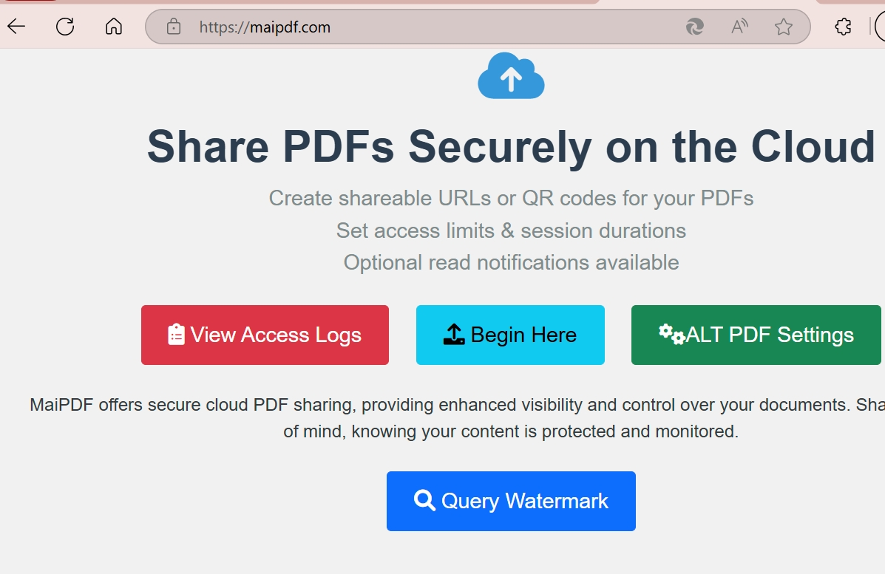
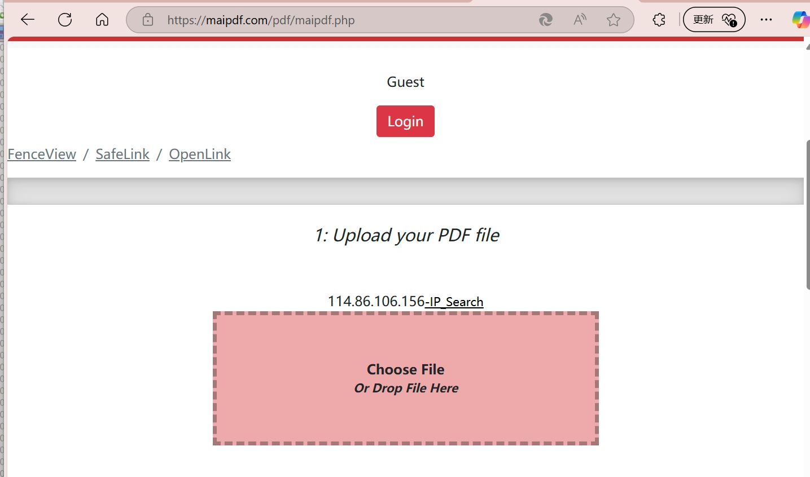
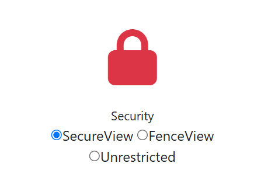
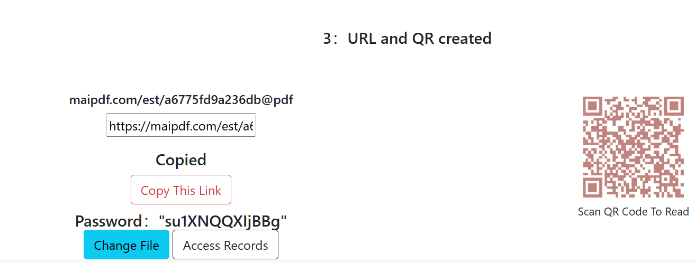
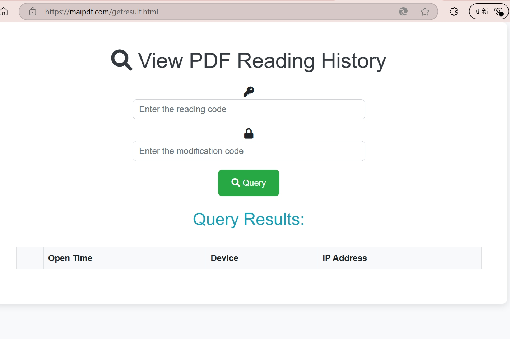

MaiPDF
is a hosted PDF delivery and access logging tool. This article focuses on how its document links, access records, and security settings work in practice, rather than presenting it as a general marketing showcase.

Flow Diagram
Interactive Flow Diagram
flowchart TD
A[Start] --> B[Process Step]
B --> C[Collect Data]
C --> D[Analyze Results]
D --> E[Done]
style A fill:#667eea,stroke:#764ba2,stroke-width:2px,color:#fff
style E fill:#48bb78,stroke:#38a169,stroke-width:2px,color:#fff
Core Features of MaiPDF
Access Logging
MaiPDF records several common access data points, including:
IP Address Logging
- Request source information and approximate geolocation
Start by uploading a PDF file to the MaiPDF platform so it can be served through a hosted access page.

Step 2: Configure Tracking Settings
Configure the document's access and security settings:
Set access permissions and restrictions
Configure watermark options
Enable email verification requirements
Choose security level settings

Step 3: Generate Trackable Links
MaiPDF creates unique tracking links and QR codes for easy sharing across multiple platforms.

Step 4: Share and Distribute
Share your trackable PDF links through various channels:
Email campaigns
Social media platforms
Instant messaging apps
Website embedding
Step 5: Monitor Access Analytics
Track and analyze visitor behavior through comprehensive dashboard Data Analytics.

棣冩敵 Advanced Features Deep Dive
棣冩惓 Analytics and Reporting
棣冨箚 Use Cases and Applications
棣冩礉閿?Security and Privacy Features
棣冩惐 Benefits of Using MaiPDF
棣冩畬 Getting Started with MaiPDF
棣冩憫 Conclusion
MaiPDF represents the future of PDF document management, combining advanced tracking capabilities with enterprise-grade security. Whether you're a business professional. educator. or content c...
The platform's comprehensive Data Analytics. flexible security settings. and user-friendly interface make it an invaluable tool for anyone serious about document intelligence and protection.